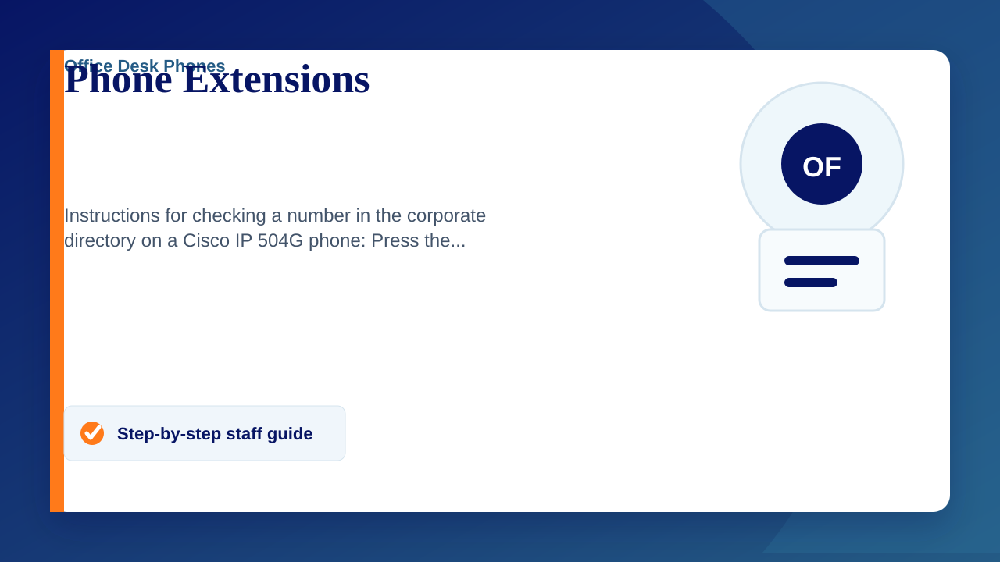

Instructions for checking a number in the corporate directory on a Cisco IP 504G phone:
- Press the "Directory" button on the phone.
- Select "Corporate Directory" using the navigation button.
- Enter the name or number you are looking for using the keypad.
- Press "Submit" to search.
- Scroll through the results using the navigation button.
- Select the desired contact to view details or press "Dial" to call.
These steps should help you quickly find and contact colleagues using the corporate directory on their Cisco IP 504G phones, however, to check the manually updated list, please see below:
Extension numbers for Claremont - Last updated 04/09/2025